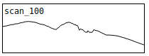
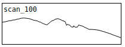

The mountains consist of more than eleven million year old basaltic rocks. Their lava layers, always tilted towards the center of the island, were once connected, forming large plains of overlying lava fields. The glaciers in the Late Pleistocene carved huge gouges into the rock masses, leaving behind sharp ridges, that demarcate from the sky with disctinct contours (on a clear day).
What appears to be stirdy, immobile constructs of nature becomes vivd and fluent, once you start changing your perspective. Moving only a dozen of meters, the compositions of all the lines describing the mountains' characters will shift ‒ the outline of the ridges in front of the clear skies, the tilted lava layers inclined towards north-west, the trails that falling gravel leaves behind or the gashes that are carved into the slopes by the rivers ‒ they all are moving, as you change your perspective.
Sauðabólstindur
64.85717252104585, -13.87645925059994


 

How was this made?
A photo was taken of Sauðahólstindur mountain peak every ~20 meters distance. The images where aligned and centered with the mountain tip, so that the shift in perspective can be observed (sonically).
The audio files represent "mountain scans" that are made from 1920-pixel-wide source images. The images are translated to pitch and played back at 1 pixel per millisecond (resulting in 1.92 seconds-long sound files). At the same time, they are being repeatedly played at 44100 samples per second, each sound lasts only about 43 ms.